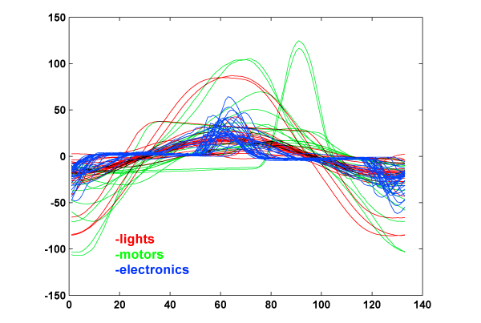
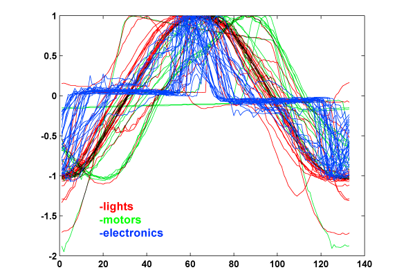
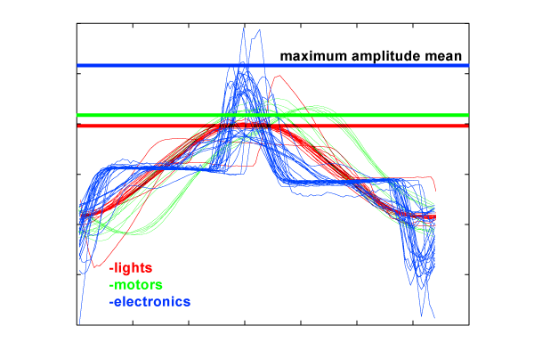

Time domain features: Amplitude
Now we had 133 * 8 bit data per wave. With only 75 data, the overflowing number of
dimensions was an obstacle to find a representation of the data using linear
transformations such as Principal Component Analysis and Multiple Discriminant
Analysis.
The most significant dimension extracted by PCA and MDA was hard to generalize
because our data set was too small.
Amplitude
The amplitude of the signal of a device is not a good feature for discrimination, since the power consumptions of each class vary broadly. Instead, we normalized the waveform as in figure 3 to get a correlation. Waves can be normalized with the maximum peak of the wave (figure 2) or by dividing with the area of the wave (figure 3). The latter was better in identifying trends.
Figure 1: 
Figure 2: Current divided by maximum peak of its wave: 
Figure 3: Current divided by area of signal: 